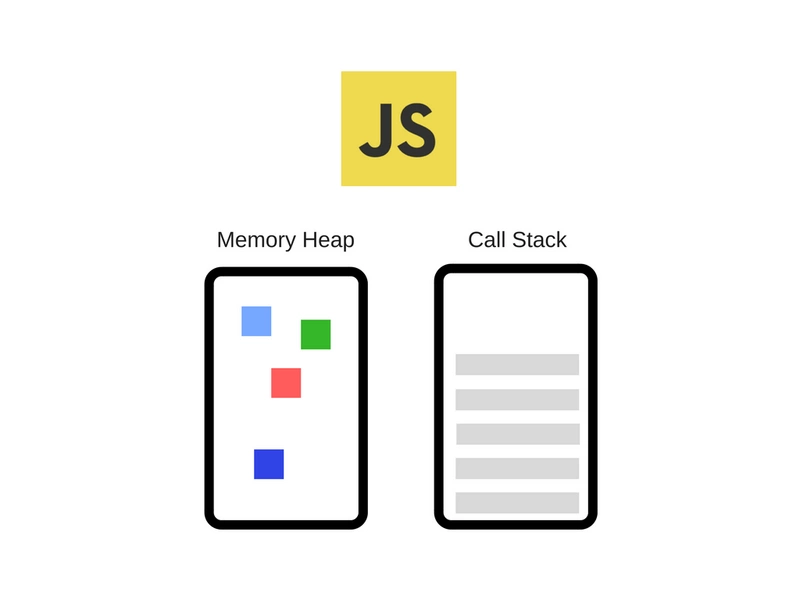
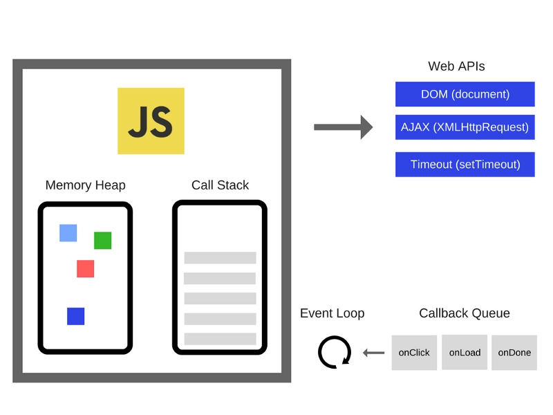
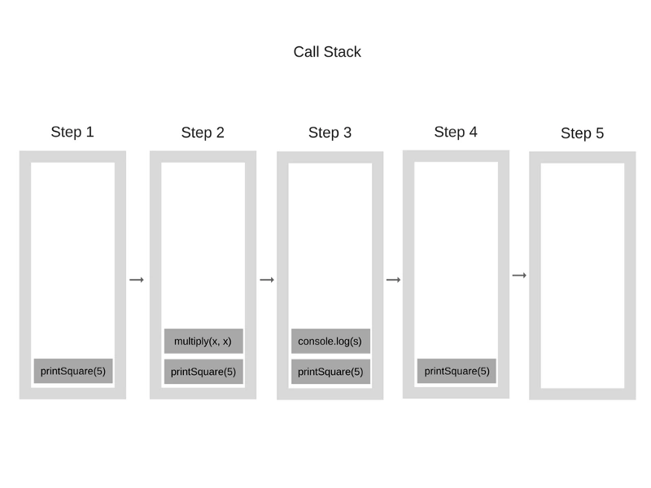
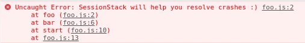
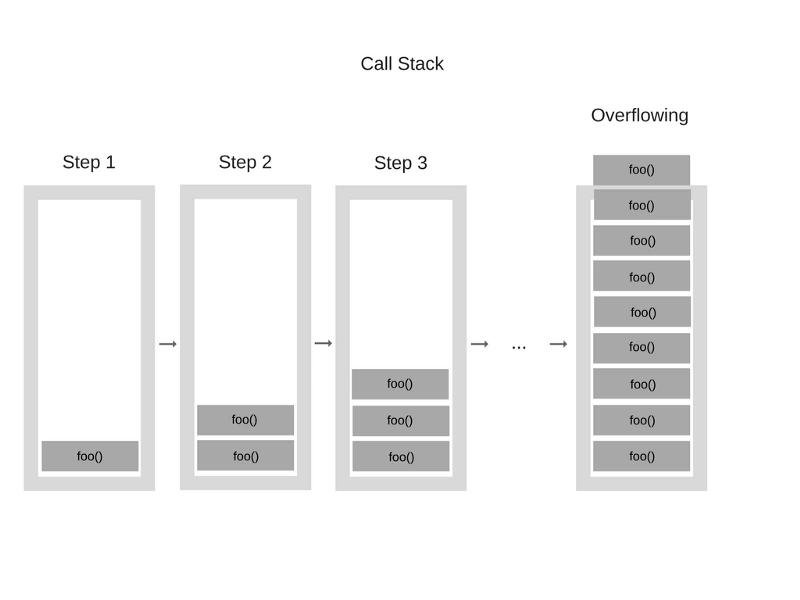
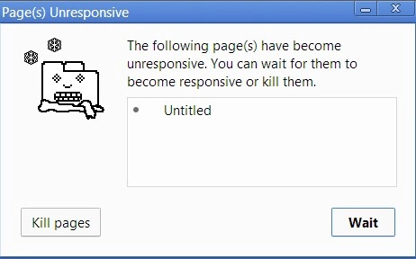

javascript 执行过程
前言
本人平时学习及收集内容，欢迎参入一起讨论。
内容
一、概述
几乎每个人都已经听说过 V8 引擎，大多数人都知道 JavaScript 是单线程的，或者它使用的是回调队列。
在本文中，我们将详细介绍这些概念，并解释 JavaScript 实现如何运行。通过了解这些细节，你将能够适当地利用所提供的 API 来编写更好的、非阻塞的应用程序。
如果您对 JavaScript 还比较陌生，那么本文将帮助您理解为什么 JavaScript 与其他语言比如此“怪异”。
如果你是一个有经验的 JavaScript 开发人员，希望它能让您对每天使用 JavaScript 运行时的实际工作方式有一些新的见解。
二、JavaScript 引擎
JavaScript 引擎的一个流行示例是 Google 的 V8 引擎。例如，在 Chrome 和 Node.js 中使用 V8 引擎，下面是一个非常简化的视图：

V8 引擎由两个主要部件组成:
- emory Heap(内存堆)——内存分配地址的地方
- Call Stack(调用堆栈)——代码执行的地方
三、Runtime(运行时)
有些浏览器的 API 经常被使用到（比如说：setTimeout），但是，这些 API 却不是引擎提供的。那么，他们是从哪儿来的呢？事实上这里面实际情况有点复杂。

所以说我们还有很多引擎之外的 API，我们把这些称为浏览器提供 API 称为 Web API，比如说 DOM、AJAX、setTimeout 等等。
然后我们还拥有如此流行的事件循环和回调队列。
四、调用栈
JavaScript 是一种单线程语言，这意味着它只有一个调用堆栈。因此，它一次只能做一件事。
调用栈是一种数据结构，它记录了我们在程序中的位置。如果我们运行到一个函数，它就会将其旋转到栈顶，当从这个函数返回的时候，就会将这个函数从栈顶弹出，这就是调用栈做的事情。
来个例子：
function multiply(x,y){
return x * y;
}
function printSquare(x){
var s = multiply(x,x);
console.log(s);
}
printSquare(5);
2
3
4
5
6
7
8
9
10
当程序开始执行的时候，调用栈是空的，然后，步骤如下：

每一个进入调用栈的都称为调用帧。
这能清楚的知道当异常发生的时候堆栈追踪是怎么被构造的，堆栈的状态是如何的，让我们看一下下面的代码：
function foo(){
throw new Error('SessionStack will help you resolve crashes');
}
function bar(){
foo();
}
function start(){
bar();
}
start();
2
3
4
5
6
7
8
9
10
11
如果这发生在 Chrome 里（假设这段代码实在一个名为 foo.js 的文件中），那么将会生成以下的堆栈追踪：

“堆栈溢出”，当你达到调用栈最大的大小的时候就会发生这种情况，而且这相当容易发生，特别是在你写递归的时候却没有全方位的测试它。我们来看看下面的代码：
function foo(){
foo();
}
foo();
2
3
4
5
当引擎开始执行这段代码时，它首先调用函数“foo”。然而，这个函数是递归的，并且在没有任何终止条件的情况下开始调用自己。因此，在执行的每一步中，相同的函数都会被一次又一次地添加到调用堆栈中，如下所示：

然而，在某些时候，调用堆栈中的函数调用数量超过了调用堆栈的实际大小，浏览器决定采取行动，抛出一个错误，它可能是这样子的：
在单个线程上运行代码很容易，因为你不必处理在多线程环境中出现的复杂场景——例如死锁。
但是在一个线程上运行也非常有限制，由于 JavaScript 只有一个调用堆栈，当某段代码运行变慢时会发生什么？
五、并发与事件循环
当调用堆栈中的函数调用需要花费大量时间来处理时会发生什么情况？例如，假设你希望在浏览器中使用 JavaScript 进行一些复杂的图像转换。
你可能会问-为什么这是一个问题？问题是，当调用堆栈有函数要执行时，浏览器实际上不能做任何其他事情——它被阻塞了，这意味着浏览器不能呈现，它不能运行任何其他代码，它只是卡住了，如果你想在应用中使用流畅的页面效果，这就会产生问题。
而且这不是唯一的问题，一旦你的浏览器开始处理调用栈中的众多任务，它可能会停止响应相当长一段时间。大多数浏览器都会这么做，报一个错误，询问你是否想终止 web 页面。

这并不是最好的用户体验，不是吗？
那么我们怎样才能在不阻塞 UI 和不使浏览器失去响应的情况下执行大量代码呢？解决方案是异步回调。
参考资料
- JavaScript 是如何工作的：引擎，运行时和调用堆栈的概述！
- JavaScript 的运行机制
- 这一次，彻底弄懂 JavaScript 执行机制
- [译] JavaScript 运行原理
- 理解 Javascript 执行过程
- 彻底吃透 JavaScript 的执行机制
- 浏览器和 Node 中的 JavaScript 是如何工作的? 可视化解释
- day039: 描述一下 V8 执行一段 JS 代码的过程？
- 【动画演示】JavaScript 引擎运行原理
联系作者
平凡世界，贵在坚持。